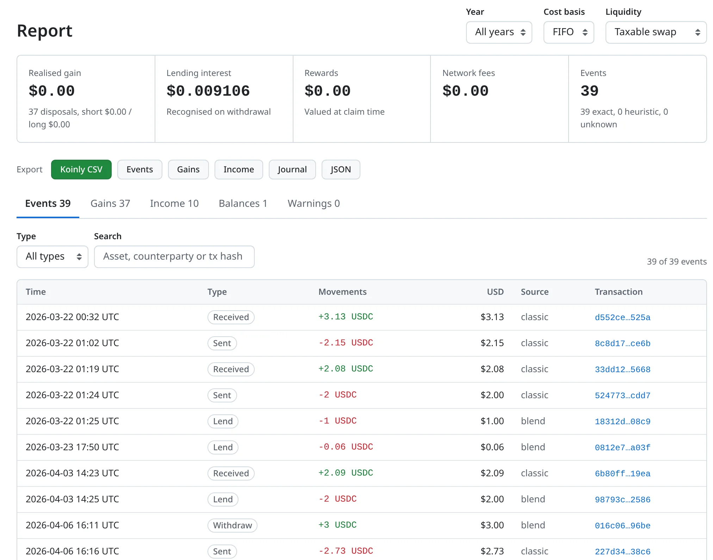
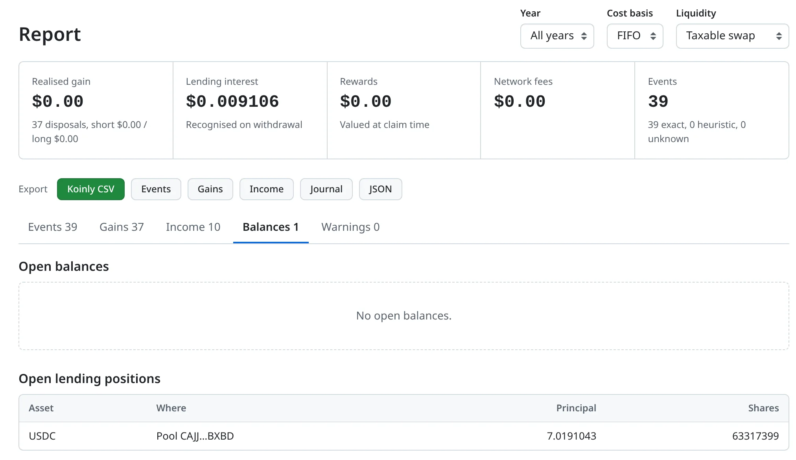

Turn a Stellar address into books.
Paste an address. Get classified transactions, tax lots, lending interest and exports for Koinly or your accountant.

Reads Soroban DeFi, not just payments.
Protocol decoders turn contract events into exact accounting events, so a supply is a supply and a swap is a swap.
On chain
- Blend v2
- Supply, withdraw, borrow, repay, flash loans, backstop deposits, auctions and liquidations.
- Soroswap
- Router swaps, plus a generic path for other swaps, liquidity and vault shares.
- Payments
- Classic and token transfers, with network fees netted per transaction.
Blend pools are verified through the pool factory, so a lookalike contract is never booked as lending.
In the books
- Lots
- FIFO, LIFO or HIFO, with holding periods.
- Interest
- Lending, borrow and backstop interest, worked out from share balances.
- Prices
- USD at the time, from the SDEX, the USDC peg or your own CSV. Anything unpriced is flagged.
- Exports
- Koinly CSV, events, gains, income, a double-entry journal and JSON.

Positions, not only transactions.
Open lending positions, borrows and balances sit beside every event. When the tool had to estimate something, a warning says so and says why.
Raw transactions stay in a local database, so changing the cost-basis method never refetches anything.
How it works
-
Discover
Horizon lists every transaction that touches the address.
-
Decode
The public Stellar data lake supplies each contract event. Verified decoders classify them.
-
Price
Every movement gets a USD value at the time it happened.
-
Export
Download Koinly CSV, a journal or JSON, or read the report in the local web UI.
Run it locally
Needs Node 22.18 or newer. There is nothing to install first.
npx activity-ledger serveThen open http://localhost:4173, paste an address and sync. Try a small sync first. Your database is saved in the folder you ran it from.
Your data stays on your machine.
The web UI listens on loopback only and keeps everything in a local SQLite file. It reads public chain data and never handles keys or signs anything.
Open source, MIT licensed.
Protocol decoders backed by real mainnet transactions are the most useful contribution. The roadmap lists what is done and what comes next.